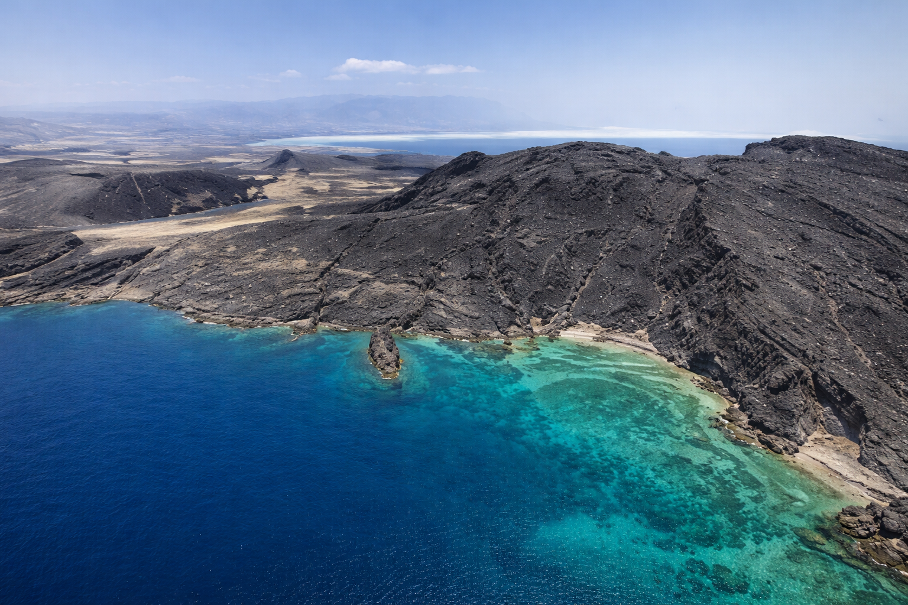

Région de Tadjourah
85k
Lac Assal
Le point le plus bas d'Afrique (-155m), entouré de banquise de sel pur

RetourAux confins de la mer Rouge et des plaques tectoniques
Situé à la corne de l'Afrique, Djibouti est une destination unique au monde, offrant des paysages d'une beauté brutale et géologique. Du Lac Assal, point le plus bas d'Afrique et l'un des plus salés au monde, aux cheminées calcaires fumantes du Lac Abbe qui évoquent un décor de science-fiction, Djibouti est un paradis pour les amateurs de géologie et de photographie. Ses eaux cristallines de la Mer Rouge abritent des requins-baleines majestueux et des récifs coralliens d'une richesse exceptionnelle, faisant de l'archipel des Sept Frères et du Golfe de Tadjourah des spots de plongée de classe mondiale.
Découvrez les 15 merveilles de Djibouti
Le point le plus bas d'Afrique (-155m), entouré de banquise de sel pur

Cheminées de calcaire fumantes et paysages lunaires (Décor de 'La Planète des Singes')

Paradis corallien aux eaux cristallines pour la plongée et le farniente

Forêt primaire millénaire, refuge du Francolin de Djibouti

La 'Fosse aux Démons', sanctuaire hivernal des requins-baleines

Sable blanc et eaux turquoises à quelques kilomètres de la capitale

Une cité historique pleine de charme, porte d'entrée des Monts Goda

Failles spectaculaires témoignant de l'écartement des plaques tectoniques

Découverte de la biodiversité marine incroyable de la Mer Rouge

Ancienne capitale coloniale, point de départ vers les îles Sept Frères

Paysages de savane et montagnes, coeur de la culture pastorale

La 'Cité de l'Unité', carrefour vers le Lac Abbe
Climat tempéré et vue panoramique sur le Golfe de Tadjourah
Spot privilégié pour nager avec les requins-baleines en saison
Sanctuaire marin sauvage pour les plongeurs expérimentés
Un carrefour des mondes Afar et Somali au coeur de l'Orient.
Djibouti est une terre de métissage millénaire, où les traditions nomades des Afars et des Somalis se conjuguent avec les influences de la Mer Rouge et de l'Arabie. Cette identité s'exprime par une hospitalité généreuse, une cuisine parfumée et des traditions orales riches. De l'art de vivre autour du thé à l'élégance des parures traditionnelles, Djibouti vibre d'une culture authentique. Ancien point stratégique de la route de la soie, le pays conserve cette âme de commerçant et de voyageur, faisant de sa capitale un hub cosmopolite vibrant.
La fusion harmonieuse entre les cultures Afar et Somali, piliers de la nation djiboutienne.
Une gastronomie riche, mélange d'épices d'Éthiopie, d'Arabie et de l'Océan Indien.
Les poésies et chants nomades qui racontent les épopées du désert et la liberté.
Une position stratégique au Bab-el-Mandeb, carrefour vital du commerce mondial.

L'artisanat authentique de Djibouti. Des tissages nomades aux sels du Lac Assal.
 Artisanat
Artisanat
Tapis et nattes réalisés à la main par les femmes nomades selon des techniques ancestrales.
 Gourmet
Gourmet
Sel pur récolté à la main, célèbre pour sa richesse en minéraux et ses cristaux parfaits.
 Style
Style
Colliers et parures colorés, parfaits pour une touche d'élégance djiboutienne.
L'emblématique poignard Afar avec son fourreau en cuir, une pièce de collection unique.
Résines odorantes pures pour parfumer votre intérieur à l'africaine.
Tissu léger et coloré porté par les hommes, idéal pour les climats chauds.

Djibouti-ville, Grand Luxe

Djibouti-ville, Vue sur Mer

Djibouti-ville, Charme & Plage

Djibouti-ville, Business & Confort

Djibouti-ville, Coeur Historique

Djibouti-ville, Élégance Urbaine
La cuisine djiboutienne est une fusion savoureuse de traditions nomades et d'influences épicées d'Orient.
Le plat national : riz épicé à l'agneau et à la cannelle, parfumé à la cardamome.
Soupe traditionnelle consistante de viande de chèvre ou de bœuf avec des légumes.
Poisson grillé au four traditionnel et nappé d'une sauce piquante aux épices.
Galette fine et spongieuse, base de tous les petits-déjeuners djiboutiens.
Beignets triangulaires frits, fourrés à la viande hachée épicée ou aux légumes.
Confiserie sucrée et parfumée à la cardamome, servie lors des grandes occasions.
Poisson grillé servi avec du miel, de la purée de dates et du pain traditionnel.
Riz basmati parfumé servi avec du poisson frais grillé à la djiboutienne.
Jus de fruit frais, onctueux et naturel, symbole du soleil de Djibouti.
Thé au lait épicé à la cardamome et au clou de girofle, moment de partage sacré.
Viande tendre mijotée aux épices berbères, un délice traditionnel.
Langoustes et gambas de la Mer Rouge, grillées à l'ail et au citron.
Vivez les moments forts de la culture et de l'histoire djiboutienne.
Défilés militaires et festivités populaires dans tout le pays (27 Juin).
Événement naturel majeur attirant les plongeurs du monde entier (Novembre à Janvier).
Grand festival de musique de la Corne de l'Afrique célébrant la diversité régionale.
La période idéale. Les températures sont clémentes (20-30°C), permettant de visiter les lacs et de nager avec les requins-baleines sans la chaleur accablante de l'été.
Chaleur intense (souvent > 40°C) et vent Khamsin. Période déconseillée pour le tourisme terrestre, mais les eaux de la mer Rouge restent magnifiques pour la plongée.
Djibouti est l'un des pays les plus sûrs de la région. Vigilance normale requise. Évitez de photographier les bâtiments officiels et militaires.
Excellentes cliniques privées à Djibouti-ville. Buvez exclusivement de l'eau en bouteille. Protection solaire de haut indice indispensable.
E-visa obligatoire avant le départ pour la plupart des nationalités. Procédure simple en ligne sur le site officiel de l'immigration.
Franc Djiboutien (DJF). L'Euro et le Dollar sont acceptés pour le change. Cartes bancaires utilisables dans les hôtels et grands restaurants.
Expert Géologie & Lacs
Spécialiste des formations volcaniques, Hassan vous fera découvrir les secrets du Lac Assal et du Lac Abbe.
Experte Plongée & Mer
Instructrice de plongée passionnée, Fatouma vous guidera vers les plus beaux récifs du Golfe de Tadjourah.
Guide Culturel & Nomade
Originaire des Monts Goda, Ali vous fera vivre l'immersion authentique au coeur des traditions Afar et Somali.